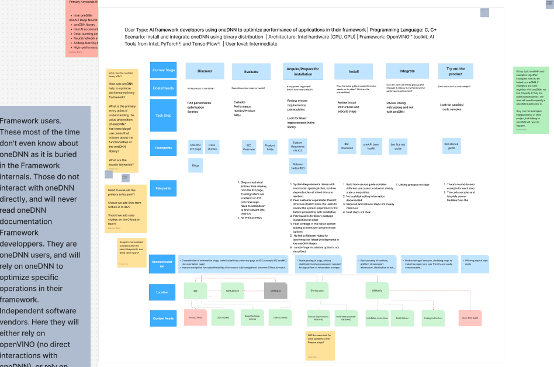
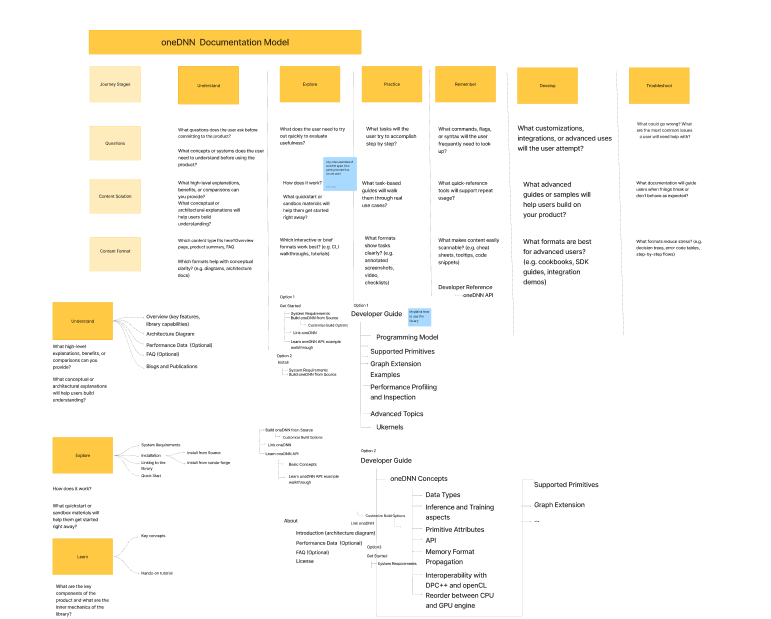
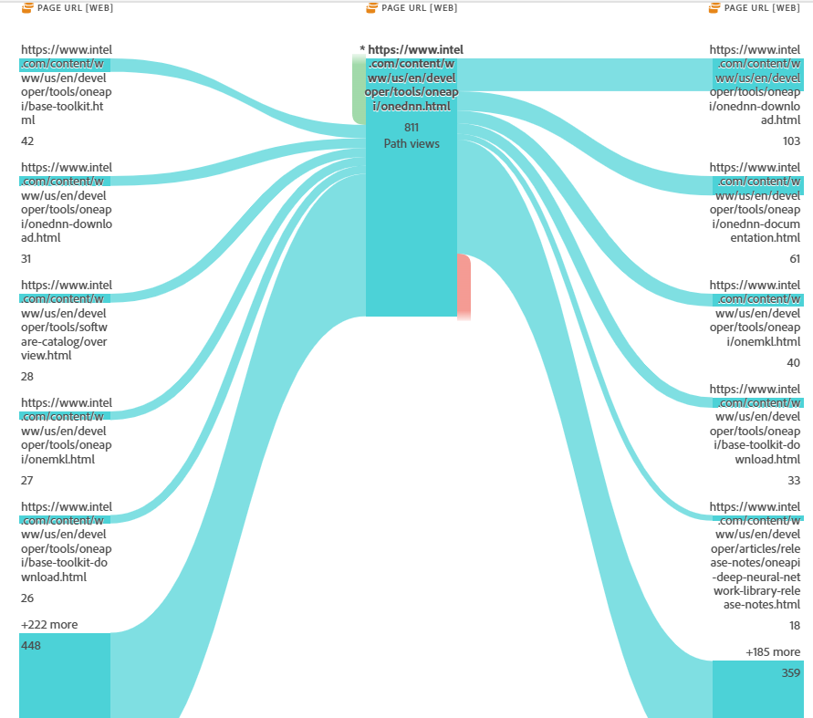

Hi! I'm Ranu Kundu, a technical writer and an engineer experienced in creating high-impact documentation for AI performance libraries and developer APIs. With a background as a software engineer, I bring a strong technical foundation to technical writing and content strategy.
Technical Writer with experience in creating high-impact documentation for AI performance libraries and developer APIs. With a background as a software engineer, I bring a strong technical foundation to technical writing and content strategy.
I specialize in crafting intuitive user experiences, producing developer and product documentation, release notes, and learning path courses. My approach combines deep technical knowledge with user-centered design principles to create documentation that truly serves its audience.
Core Competencies
Content Strategy and UX Writing: Align business objectives with messaging strategy to deliver user-focused content
Information Architecture: Create analytics-driven architectural solutions to support business-critical personas
Developer Documentation & APIs: Expert in creating API documentation for developer-centric platforms
Content Design & Interaction: Design developer journeys using prototyping tools like Figma and Mural
Cross-functional Collaboration: Work effectively with product, UX, and engineering teams
Education
Bachelor of Technology in Information Technology
West Bengal Institute of Technology, Kolkata, India | 2004 - 2008
Diploma of Education in Freelance Journalism and Feature Writing
London School of Journalism | 2024 - 2026
A showcase of my documentation and content strategy work across AI/ML, cloud services, and developer tools.
Intel oneAPI oneDNN Documentation
Led content redesign project for Intel's Deep Neural Network Library, implementing new information architecture based on user research and competitive analysis. Improved user satisfaction score by 30% and readability score by 20%.
Designed and implemented structural framework for documenting cloud REST API workflows, increasing developer satisfaction by 20%. Created comprehensive API documentation including endpoints, request/response examples, and authentication flows.
Developed comprehensive learning path courses for technical training using instructional design principles. Published two Data Science books as the Course Managing Editor on Amazon with hands-on exercises and real-world examples.
Conducted user research and created detailed developer journey maps to identify pain points and content gaps in documentation. Used findings to redesign information architecture and improve onboarding flows.
UX ResearchJourney MappingUser Research
API Reference Automation Program
Managed automation program for publishing auto-generated API reference content on NetApp docs platform. Streamlined the documentation CI/CD pipeline with the peer and technical reviews, reducing manual effort, and ensuring synchronization with code releases.
AutomationProgram ManagementAPI Documentation
OpenAPI Specification Templates
Created an internal API service template for structuring and editing OpenAPI specification files. This effort standardized API documentation across product ensuring consistency.
TemplatesOpenAPIProcess Optimization
Documentation Workflow Optimization
Designed and implemented improved documentation workflows using JIRA and Confluence. Created project tracking systems that improved team collaboration.
JIRAConfluenceAgile
Cross-functional Collaboration Framework
Established effective communication channels between documentation, engineering, product, and QA teams. Implemented review processes that caught issues early and improved documentation accuracy.
Team CollaborationStakeholder ManagementQuality Assurance
Content Audit & Improvement Initiative
Conducted comprehensive content audit of Intel oneDNN documentation, identifying gaps, inconsistencies, and opportunities for improvement. Implemented changes that increased readability scores by 20%.
Content AuditQuality MetricsReadability
Get Started Guide Enhancement
Rewrote and restructured the oneCCL Get Started Guide, improving document quality by 15%. Applied user-centered design principles and clear step-by-step instructions to enhance the onboarding experience.
User ExperienceOnboardingTutorial Writing
Code Sample Testing & Validation
Established rigorous testing procedures for code samples in documentation. Tested all REST API examples using Postman in collaboration with QA teams to ensure accuracy and reliability.
Code TestingQuality AssurancePostman
User Satisfaction Measurement
Implemented analytics and feedback mechanisms to measure documentation effectiveness. Used data-driven insights to continuously improve content, resulting in 30% increase in user satisfaction scores.
AnalyticsUser FeedbackMetrics
Technical Accuracy Reviews
Collaborated with subject matter experts to ensure technical accuracy of all documentation. Implemented peer review processes that caught errors early and maintained high quality standards.
Intel oneAPI Deep Neural Network Library Documentation
Content strategy redesign and information architecture implementation | July 2024 – September 2025
Context
Project Background
Intel oneAPI Deep Neural Network Library (oneDNN) is a critical open-source performance library used by AI and machine learning developers worldwide. The library's documentation was experiencing low adoption rates and user satisfaction scores, indicating a need for comprehensive content strategy overhaul.
Challenge: The existing documentation structure made it difficult for developers to find information quickly, onboarding was confusing, and the content wasn't aligned with actual developer workflows. User feedback indicated frustration with navigation and lack of clear getting-started paths.
Stakeholders: Engineering teams, product managers, UX researchers, open-source community contributors, and end-users ranging from ML researchers to AI framework engineers.
Goal: Redesign the documentation architecture to improve discoverability, enhance user satisfaction, and accelerate developer onboarding while maintaining technical accuracy and comprehensive coverage.
Process
Step 1: Persona AnalysisMy first step was to understand the audience I'm writing for. I interviewed product and engineering teams at Intel to get an insight into the persoan, understand their typical workflow to onboard and get started with the library.
Developer persona showing typical workflow and pain points in the onboarding process
Step 2: Content AuditI completed a comprehensive audit of existing documentation pages, identifying gaps, redundancies, outdated content, and areas with poor readability scores that caused friction during developer onboarding.
Developer persona showing typical workflow and pain points in the onboarding process
Step 3: Journey MappingI created detailed developer journey maps for the key personaand mapped pain points and opportunities at each stage.

Developer persona showing typical workflow and pain points in the onboarding process
Step 4: Competitive AnalysisI created detailed developer journey maps for the key personaand mapped pain points and opportunities at each stage.
Step 4: Information Architecture Design and Building a Learning PathDesigned new documentation structure using card sorting and tree testing with actual users. Organized content around user tasks rather than technical components.

Developer persona showing typical workflow and pain points in the onboarding process
Step 5: Measurement & OptimizationI tracked key metrics (user satisfaction, page views, bounce rates) and continued optimizing content based on data insights.

Developer persona showing typical workflow and pain points in the onboarding process
Key Results
30%
User Satisfaction Increase
20%
Readability Improvement
10%
Adoption Rate Increase
GitHub Contributions
Sample pull requests demonstrating documentation improvements and content strategy implementation:
NetApp BlueXP is a platform that enables management of hybrid multicloud architecture for enterprise developers. The platform supports several features such as auditing, tenancy, and more and the corresponding APIs enable to access the resources to integrate into developer applications.
Challenge:User feedback indicated that comprehensive API documentation was necessary. Tere was inconsistency across product in terms of voice, tone, and style. The existing legacy structure made it difficult for developers to find information quickly.
Stakeholders: Engineering teams, product managers, community contributors, and end-users including enterprise developers.
Goal: Write and maintain REST API documentation while maintaining technical accuracy and comprehensive coverage. Create a service template to standardize documentation of APIs across product. Validate code samples to produce technically accurate documentation.
API Documentation Sample: Tenancy Service
Complete API documentation for the BlueXP Tenancy service, demonstrating comprehensive endpoint documentation, authentication flows, and developer guidance.
Overview
The Tenancy service provides secure and granular role-based access control (RBAC) for the resources in the BlueXP platform when using BlueXP in restricted mode or private mode. The service operates within the context of a BlueXP account. The identity of the API caller and the account are established through a user or service token.
It consists of several internal major components that operate together to enable and restrict resource access.
Components
account
authorize
resource
service account
user
workspace
Note: Before using the API reference documentation, review the Get started section for the BlueXP APIs. For more information about the security tokens and identifiers you'll need when using the API, review the Common workflows and tasks section.
API Versioning
The API version is included in the URL path. The current version is v1. Backward compatibility is maintained within major versions and deprecation notices are provided at least six months before removing endpoints.
Authentication
The Tenancy API uses API key authentication with Bearer tokens. All requests must include an Authorization header with a valid API key.
Obtaining an API Key
Generate the user token
This API call uses the Auth0 authentication service. See the URL in the curl example below and adjust for your environment as needed.
The following steps describe how to obtain the required authentication information and perform a REST API call.
1. (Optional) Locate the Console agent ID and client ID
Several Console APIs require a Console agent ID to route the request to the appropriate environment. You can also locate the related Client ID. See Get required identifiers for more information.
2. Obtain the access tokens
Depending on the REST API call, you might need a user token, a service token, or both. These tokens can be obtained from the Auth0 authorization service. The tokens need to be included with every API call.
Create user token
Create service token
3. Create the required request headers
You need to create several HTTP request headers and include them with each API call. The most common headers are described below.
Authorization
This header typically contains the user bearer access token.
x-agent-id
This header contains the agent ID for API calls that require it.
4. Issue a REST API call
You can use curl or the programming language of your choice to issue a REST API call. There are also workflow examples available for the ONTAP management API.
REST Implementation
HTTP Methods
Method
Description
POST
Create an object instance
GET
Retrieve an object instance or collection
PATCH
Update an existing object
DELETE
Remove an existing object
Request Headers
Request Header
Description
Authorization
Required. Contains a JWT access token
X-service-request-id
Used to tag a request with application-specific keys for improved supportability
X-agent-id
Contains the BlueXP Connector ID and can be included depending on the call
X-tenancy-account-id
Contains the account identifier and can be included depending on the call
HTTP Status Codes
Status Code
Description
200
OK: Returned for successful operation completion
400
Bad Request: Returned if the input is malformed and could not be parsed
401
Unauthorized: Returned if user authentication failed or the token has expired
403
Forbidden: Returned for authorization errors depending on the resource and token
GET /tenancy/account/{accountId}
Retrieves a specific account by an account identifier.
Suppose a company is in stealth mode and doing a proof of concept (PoC) with a BlueXP account. If it's successful, the company might want to move from the PoC account to a development account. Another migration use case is account consolidation.
What are the SaaS enablement and third-party service enablement options?
SaaS enablement is used to allow an account to have access to the BlueXP portal. Third-party service enablement allows or enables third party services (such as Fluid).
What is the difference between discovering a resource and creating a resource?
Discovery is the process of locating an existing resource and attaching it to the account. Creating a resource, on the other hand, first involves various allocation and provisioning operations and then attaching the resource.
API Workflow Documentation
Comprehensive workflow documentation for creating Cloud Volumes ONTAP systems using REST APIs.
Create a Cloud Volumes ONTAP System
You can create a new Cloud Volumes ONTAP system using capacity-based licensing. You can add new volumes when creating the system.
Note: When using capacity-based license:
A marketplace subscription is required
If you purchase a license from NetApp (BYOL), a NetApp Support Site (NSS) key is required to register the system for support
You can add more volumes after creating the system. You can choose to create a volume using either NFS, CIFS, or iSCSI protocol.
Choose the Workflow Based on Deployment Type:
Single Node
Create a single node Cloud Volumes ONTAP system
HA Pair
Create a high availability Cloud Volumes ONTAP system
Create a System for a Single Node
Step 1: Select the Region
Perform the workflow Get regions and choose the code value for the region parameter in step 11.
Step 2: Select the Workspace
Perform the workflow Get tenants and choose the workspacePublicId value for the tenantId parameter in step 11.
Step 3: Select the Permutations Configuration
Perform the workflow Get permutations and choose the ontapVersion and license: type and instanceType values for the vsaMetadata parameter in step 11.
Step 4: Select the Capacity Package Name
Choose the package name for the vsaMetadata:capacityPackageName parameter in step 11.
Three licensing options available:
Professional
Essentials
Freemium
Step 11: Create the System
You can issue a REST API call to create the system.
💡 Replace "[ADD YOUR GITHUB PR URL HERE]" with your actual pull request URL
API Conceptual Content: Authentication & Tokens
Understanding authentication models and access tokens for BlueXP REST API.
Access Tokens
There are two types of access tokens that can be used to establish identity and authorization as part of performing a REST API call. The user access token is generally more common with customer automation applications.
Authentication Models
There are two authentication models available when requesting a user access token. The one you select depends on your authentication environment. Each authentication model is supported through a different grant type.
Federated Authentication
Federated authentication allows multiple identity domains to be joined, providing shared access to resources across separate enterprise organizations. Each organization maintains its own identity management system which is recognized by the other participating organizations.
Key Point: Users who sign in using a federated user account must first generate a long-lived refresh token.
Non-Federated Authentication
Non-federated authentication is based on identity and resource access within a single domain.
Key Point: Users who sign in using a non-federated user account can obtain either a long-lived refresh token or a regular access token.
Contents of a User Token
A user token is formatted as a standard JWT token and contains information about an individual user. It normally includes the following fields:
Field
Description
Header
JSON object encoded using base64url encoding. Contains information about the encryption algorithm used to encode the token and the public key ID for token validation.
Standard claims
JSON payload contains the user identification information, audience, the expiration time, scope of resource access given to the user.
Custom claims
Contains customized information of the user for example, the full name of the user, and so on.
Signature
Used to validate the issuer and the encoded message in the token.
10 years of combined experience in software engineering and technical writing
July 2024 – September 2025
Software Technical Writer
Intel Corporation, Ireland
Employed efficient content strategy to improve onboarding experience for Intel oneAPI Deep Neural Network Library
Enhanced user satisfaction by 30% and readability score by 20% through content audit and journey mapping
Wrote Get Started guide that improved adoption rate by 10%
Improved quality of Intel oneAPI Collective Communications Library Get Started Guide by 15%
March 2021 – June 2024
Technical Writer and Program Manager
Bard na nGleann (Client: NetApp)
Wrote and edited product documentation, REST API developer documentation
Increased developer satisfaction by 20% through improved API workflow documentation
Created internal template reducing editing errors by 10%
Managed automation program for API reference publishing
May 2019 – June 2020
Course Managing Editor
Packt Publishing Pvt. Ltd, India
Developed learning path courses for technical training with instructional design techniques
Published two books: "Interactive Data Visualization with Python" and "The Data Wrangling Workshop"
Managed large-scale projects coordinating with authors and editors
November 2014 – July 2015
Java Programmer
Prelude Systems Inc., USA
Designed and developed single-page applications using Angular JS and JavaScript
Worked with Object-Oriented Design and Development using OOAD methodology
December 2009 – May 2013
Java Developer
Indian Institute of Science (IISc), India
Developed end-to-end web-based application for designing Compliant Mechanisms
Authored article and presented work at NaCoMM'2011 conference
Publication
Kundu, R., Aravind, C. V., Hegde, S., and Ananthasuresh, G. K., "An Online Interactive Computer Program for Pragmatic Design of Compliant Mechanisms," in 15th National Conference on Machines and Mechanisms (NaCoMM-2011), at Indian Institute of Technology, Chennai, India, December 1-2, 2011.